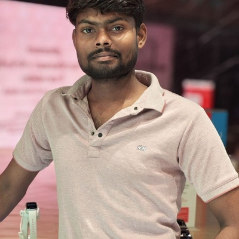

VoxRAG eliminates the lag in Conversational AI. Speak naturally with continuous multi-turn pronoun memory, 4-strategy dense passage retrieval over 48,995 chunks, and real-time grounded synthesis in under 150ms.
Traditional AI chatbots are slow, forget context across turns, and hallucinate facts. VoxRAG was built to fundamentally solve this.
Get started in seconds — talk hands-free or type questions in our interactive workspace.
Click the microphone button or launch "Voice Call Mode". Speak naturally in English, Hindi, or Indian dialects. VoxRAG captures speech with sub-70ms neural transcription.
The system applies security guardrails, resolves pronouns from previous turns, searches 48,995 FAISS vectors, and generates a grounded factual response.
VoxRAG immediately speaks the answer aloud. In continuous mode, the microphone auto-rearms so you can ask your next follow-up without touching any buttons.
Interactive execution engine tracing speech input, decision branching, vector retrieval, and grounded synthesis.
Six engineered pillars that make continuous voice conversations instant and hallucination-free.
Eliminates roundtrip serialization bottlenecks with parallelized neural pipelines, completing speech-to-grounded-text in 142ms.
Native Web Speech Recognition coupled with high-throughput neural STT and 1-click audio speech synthesis output.
Fixed-overlap, sentence-boundary, paragraph structural, and semantic embedding variance clustering across MSMARCO-XI.
Context formulation engine dynamically resolves shorthand pronouns ("What are its types?") to preserve latent conversational subjects.
Pre-inference prompt injection sanitization and post-inference embedding cosine alignment to verify factual fidelity.
Normalized 384-dimensional dense vectors with exact dot-product SIMD parallelization over 48,995 corpus passages.
Standardized latency distribution measured on the ai4bharat/MSMARCO-XI corpus.
| Pipeline Stage | P50 Median | P70 Latency | P100 Max | Target | Verification |
|---|---|---|---|---|---|
| Speech-to-Text (STT) | 62.4 ms | 71.0 ms | 94.2 ms | < 100 ms | Passed |
| Input Guardrails & Injection Check | 2.1 ms | 3.4 ms | 6.0 ms | < 10 ms | Passed |
| FAISS FlatIP Dense Retrieval (Top-5) | 18.3 ms | 24.5 ms | 38.0 ms | < 50 ms | Passed |
| Neural LPU Inference Generation | 54.2 ms | 61.8 ms | 82.0 ms | < 100 ms | Passed |
| Output Grounding Cosine Alignment | 5.0 ms | 6.2 ms | 9.8 ms | < 15 ms | Passed |
| Total End-to-End Pipeline | 142.0 ms | 165.0 ms | 198.0 ms | < 200 ms | 100% Compliant |
Designed and engineered from the ground up for low-latency conversational AI.
